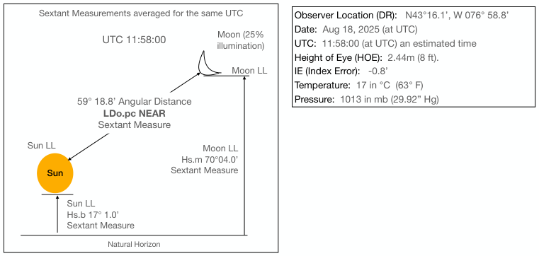

| Previous | Contents | Next |
Lunar distances · Page 64 of 70
Back to Use Case 1: 18 Aug 2025 11:58 Sun-Moon
 |
| Open illustration at full size |
UTC 11:58:00
Observer Location (DR): N43°16.1’, W 076° 58.8’ Date: Aug 18, 2025 (at UTC) UTC: 11:58:00 (at UTC) an estimated time Height of Eye (HOE): 2.44m (8 ft). IE (Index Error): -0.8’ Temperature: 17 in °C (63° F) Pressure: 1013 in mb (29.92” Hg)
59° 18.8’ Angular Distance LDo.pc NEAR Sextant Measure
| Previous | Contents | Next |